Teams
141 teams from 65 institutions
Artois University
-
418 I'm a teapot (Lyon, France)

- Antoine Jakubiak
- Jean-Alexis Delcambre
- Rayane Rousseau
- Romain Wallon (coach)
-
test = doubt (Lyon, France)
- Noé KRZYSZKOWIAK
- Victor Delcroix
- Grégory Duporge
- Romain Wallon (coach)
-
¯\_(ツ)_/¯ (Lyon, France)
- Sebastian Caron
- Thibault Lombart
- Nathan Saint-Machin
- Romain Wallon (coach)
CUNEF Universidad
-
Club Universitario de Natación Equidistante a Filipinas (Lisbon, Portugal)

- José María Capapé Gómez
- Jacobo Bascon
- Mencía Marzal Higuero
- Javier Paris (coach)
-
Skibidi onichans (Lisbon, Portugal)
- Jesús Pacheco
- Maria Dolores Navarro Maturana
- Michael Viertel
- Paco Criado (coach)
Ca' Foscari University of Venice
-
Cicchetti (Pisa, Italy)

- Alessandro Cazzin
- Alin Odobescu
- Karam El labadie
- Alessio Campanelli (coach)
ENS d'Informatique et de Mathematiques Appliquees - Grenoble
-
ensipc1 (Lyon, France)

- Aurélien Delory
- Mohamed El Khatri
- Sébastien Wyckaert
- Frederic Wagner (coach)
-
ensipc2 (Lyon, France)
- Jules Bodin
- Grégoire Stoupy
- Hugo Legrand
- Frederic Wagner (coach)
ETH Zürich
-
BaguETHe (Lisbon, Portugal)

- Tiberiu Mușat
- Oliver Sieberling
- Mihai Adrian Oprea
- Nicolas Wehrli (coach)
-
forETHought (Lisbon, Portugal)
- Jiaheng Li
- Daniyar Zakarin
- Christopher Burckhardt
- Constantin Mussaeus (coach)
-
morETHanusual (Lisbon, Portugal)
- Wuwei Yuan
- Hadyn Tang
- Andon Todorov
- Constantin Mussaeus (coach)
Ecole Centrale de Lyon
-
ECL1 (Lyon, France)
- Louis Aknin
- Bastien Moron
- Julien Girard
- Zaïd Arabi Derkawi (coach)
Ecole Polytechnique
-
UXT (Lyon, France)

- Luca Perju Verzotti
- Eliška Macáková
- Andrei-Robert Ion
- Jill-Jênn Vie (coach)
-
Xchb (Lyon, France)
- Raul-Andrei Pop
- Luca Metehau
- Alexandru Ardelean
- Jill-Jênn Vie (coach)
-
Xeppelin (Lyon, France)
- Aleksei Arzhantsev
- Dmitry Akulov
- Konstantin Amelichev
- Jill-Jênn Vie (coach)
Ecole Polytechnique Fédérale de Lausanne
-
EPicFLame (Lyon, France)

- Botu Lyu
- Khanh Nguyen
- Eduard-Alex Mihai
- Ismail Bouhaj (coach)
-
Error-Prone Function Lovers (Lyon, France)
- Theo Hollender
- Viacheslav Surkov
- Daniil Dzenhaliou
- Ismail Bouhaj (coach)
-
Polympiads Team 3 (Lyon, France)
- Daniil Pyatko
- Stefan Taga
- Adrien Vannson
- Ismail Bouhaj (coach)
INSA de Lyon
-
INSA Lyon 1 (Lyon, France)

- Ngoc Ha DAO
- Zijing Weng
- Miguel Vieira Pereira
- Marian Scuturici (coach)
-
INSA Lyon 2 (Lyon, France)
- Artur Vieira Pereira
- Ewan Chorynski
- Yoen Peyrot
- Marian Scuturici (coach)
-
INSA Lyon 3 (Lyon, France)
- Polo Diemunsch
- Ahmed Bel Hadj
- William Michaud
- Marian Scuturici (coach)
IUT La Rochelle
-
IUTLR-NiortTech (Lyon, France)
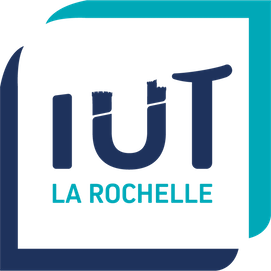
- Ivan Sabourin
- Rémi Neveu
- Nicolas Foussard
- Cyrille Suire (coach)
Institut National des Sciences Appliquées de Rouen
-
Les schroumpfs (Lyon, France)
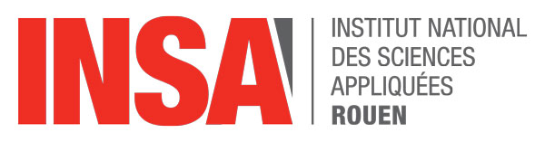
- Dimitri Timoz
- Rojan Kaya
- Simon Girard
- Alexis Lecomte (coach)
-
Les trois moustITIquaires (Lyon, France)
- Raphael Senellart
- Michel Vespier
- Capucine Garreau
- Alexis Lecomte (coach)
Institut Polytechnique de Paris
-
Parisian Debugging Society (Lyon, France)
- Paweł Łacek
- Mikhail Anoprenko
- Nguyen Minh Tung
- Gaël Thomas (coach)
Instituto Superior Técnico
-
Cod(e) Fishers (Lisbon, Portugal)

- Tiago Sousa
- Miguel Pereira
- Laura Sofia Muliar
- Luís Russo (coach)
-
ProgramIST (Lisbon, Portugal)
- Inês Costa
- Miguel Canais
- Simão Mendes
- Luís Russo (coach)
-
RUNTIMERROR (Lisbon, Portugal)
- João Pedro Leite
- Tomás Duarte
- Rita Almeida
- Luís Russo (coach)
Politecnico di Milano
-
Cerchi e pallini (Pisa, Italy)

- Tommaso Felice Banfi
- Michele De Matteo
- Gabriele Baietta
- Paolo Battellani (coach)
-
T0PZER0 (Pisa, Italy)
- Francesco Derme
- Riccardo Dante
- Pietro Fumagalli
- Paolo Battellani (coach)
-
check1 (Pisa, Italy)
- Alessio De Vito
- Antonio Georgiev
- Carlo Collodel
- Paolo Battellani (coach)
Politecnico di Torino
-
OverkillaTO (Pisa, Italy)

- Nima Naderi
- Federico Fortunati
- Mattia Longo
- Stefano Quer (coach)
-
UnderkillaTO (Pisa, Italy)
- Giulio Cosentino
- Ismaele Bahati
- Emre Kavalcı
- Stefano Quer (coach)
-
py++ (Pisa, Italy)
- Jiakai Hu
- Antonio Polignano
- Pasquale Bianco
- Stefano Quer (coach)
Polytech Paris Saclay
-
AustraPolytech (Lyon, France)

- Eva Morgand
- Hugo Estelle
- Ilyes ECHAOUI
- Thomas Delacroix-Sadighiyan (coach)
-
Poly++ (Lyon, France)
- Simon Renard
- Maxime Dauphin
- David Luca
- Thomas Delacroix-Sadighiyan (coach)
-
Élise et les garçons (Lyon, France)
- Rémi Ruelle
- Jean Vrignaud
- Elise Ordoquy
- Thomas Delacroix-Sadighiyan (coach)
Scuola Normale Superiore
-
Carovana Fighters (Pisa, Italy)
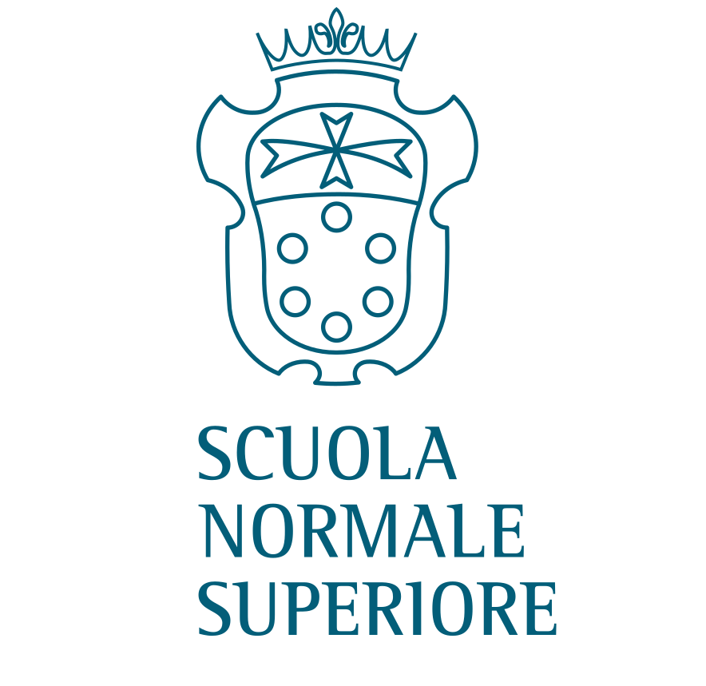
- Lorenzo Ferrari
- Alessandro Lombardo
- Francesco Vercellesi
- Matteo Musumeci (coach)
-
TeamPano (Pisa, Italy)
- Massimiliano Foschi
- Samuele Artico
- Daria Pasqualetti
- Matteo Musumeci (coach)
Scuola Superiore Universitaria di Toppo Wassermann
-
MastersOfBreaks (Pisa, Italy)

- Matteo Canton
- Alessandro Minisini
- Francesco Decataldo
- Gabriele Puppis (coach)
Scuola Superiore di Studi Universitari e Perfezionamento "Sant'Anna"
-
BeautifulSSSUP (Pisa, Italy)
- Luca Maietti
- Lorenzo Mugnaioli
- Fabio Gulmini
- Alessandro Biondi (coach)
-
Bolliti (Pisa, Italy)
- Filippo Cioccolanti
- Simone Scala
- Claudio Simeoni
- Alessandro Biondi (coach)
-
GoodLookingSSSUP (Pisa, Italy)
- James Ray Bamber
- Taulant Arapi
- Francesco Lugli
- Alessandro Biondi (coach)
Sorbonne Université
-
Sorbonne Lime (Lyon, France)

- Jad Chedid El Rahbany
- Alexander Kunitsyn
- Alejandro Gomez Urzua
- Christoph Dürr (coach)
-
Sorbonne Pourpre (Lyon, France)
- Martín Gómez Abejón
- Julie Rose Sakkour
- Anna Stanischewsky
- Christoph Dürr (coach)
-
Sorbonne SteelBlue (Lyon, France)
- Kyrylo Hoviadin
- Mouaad Datazout
- Xiang Zhou
- Christoph Dürr (coach)
Technion - Israel Institute of Technology
-
Regattoniz (Lisbon, Portugal)

- Antony Slavin
- Amit Vaisman
- Noam Goldenshtein
- Eden Saig (coach)
-
Technicode (Lisbon, Portugal)
- Eden Yosef
- Zohar Nagel
- Shirley Mushkatin
- Eden Saig (coach)
Tel Aviv University
-
Bestagons (Lisbon, Portugal)
- Yuval Vaknin
- Itamar Nir
- Sacha Hallermeier
- Dani Dorfman (coach)
-
TAU++ (Lisbon, Portugal)
- Noam Gutterman
- Netanel Esman
- Itay Yehuda
- Dani Dorfman (coach)
-
TempName (Lisbon, Portugal)
- Daniel Agassy
- Noam Licht
- Omer Ronen
- Dani Dorfman (coach)
The Open University of Israel
-
4a_plumbing (Lisbon, Portugal)
- Segev Gershon
- Erez Yakir
- Yonatan Linik
- Ofer Wald (coach)
-
Double Trouble (Lisbon, Portugal)
- Yanir Edri
- Yoav Linhart
- Ronel Lakker
- Ofer Wald (coach)
-
Schwebler's Peacocks (Lisbon, Portugal)
- Alon Tanay
- eitan elbaum
- Elazar Koren
- Ofer Wald (coach)
Télécom Paris
-
Telecom2 (Lyon, France)

- Pacôme Fromager
- Léopold Bernard
- Hippolyte Verninas
- Louis Jachiet (coach)
-
Telecom3 (Lyon, France)
- Philippe Telo
- Mohamed Taha Bayoumi
- Jeffrey Tiger
- Louis Jachiet (coach)
-
Telesperluette (Lyon, France)
- Mahdi Nasser
- Yuanjie Zhao
- Jean-Loup Arette-Hourquet
- Louis Jachiet (coach)
Télécom SudParis
-
Les Charognards (Lyon, France)
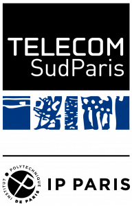
- Valentin Kervennic
- Jafar Touzeau
- Marc BETOUS
- Julien Romero (coach)
-
crash++ (Lyon, France)
- Lambin Emilien
- Alexis Lagrue
- Noé Le Pollotec
- Julien Romero (coach)
Universidad Autónoma de Madrid
-
El Consorcio (Lisbon, Portugal)

- Diego Fernández Menéndez
- Antonio Haro Martínez
- Luis Noguera Caro
- Juan Antonio Andres Saez (coach)
-
Los Churreros (Lisbon, Portugal)
- Marcos Hernanz Antón
- Marcos López Sánchez
- Enrique Anguiano Vara
- Juan Antonio Andres Saez (coach)
-
The Fan Team (Lisbon, Portugal)
- Jesús Alonso Herradura
- Marcos Rodríguez Ruiz
- Miguel Carballo Losada
- Juan Antonio Andres Saez (coach)
Universidad Complutense de Madrid
-
Clownputense (Lisbon, Portugal)

- Daniel Bordeianu
- Abdel
- Juan Diego Barrado
- Marco Antonio Gómez-Martín (coach)
-
Unos Churros Mejores (Lisbon, Portugal)
- Daniel González Arbelo
- Jorge Hernández Palop
- Daniel Lopez
- Marco Antonio Gómez-Martín (coach)
Universidad Rey Juan Carlos
-
MIDAS AC? (Lisbon, Portugal)

- Iván Penedo
- Adaya Ruiz
- Eva Gómez Fernández
- Sergio Salazar (coach)
-
isaaclo97 (Lisbon, Portugal)
- Alicia Pina
- Sara García
- Alejandro Mayoral
- Isaac Lozano Osorio (coach)
Universidad de Granada
-
ETSIIT-UGR (Lisbon, Portugal)
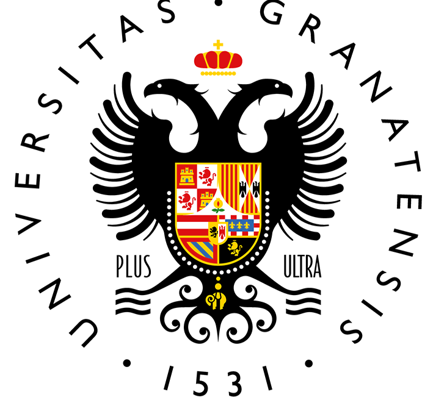
- Elías Monge Sánchez
- Airam Falcon Marrero
- Laura Mandow Fuentes
- Juan José Ramos-Muñoz (coach)
Universidad de Murcia
-
C y los mases (Lisbon, Portugal)

- Carlos Agulló Domingo
- Domingo Méndez García
- Santiago Méndez García
- Adrián Fenollar Navarro (coach)
-
Nombre del equipo 3: coming home (Lisbon, Portugal)
- Samuelffdzz
- Julio Meroño Sáez
- Aarón Caballero Ros
- Adrián Fenollar Navarro (coach)
-
UMU-NTT Data (Lisbon, Portugal)
- Juan Diego Gallego Nicolas
- Manuel Francisco Hidalgo Ros
- Miguel Requena Micó
- Adrián Fenollar Navarro (coach)
Universidade da Beira Interior
-
TripleA (Lisbon, Portugal)

- Ana Silva
- Alessandra Delgado
- Ana Silva
- Paul Crocker (coach)
Universidade do Algarve
-
OwO(n!?) (Lisbon, Portugal)
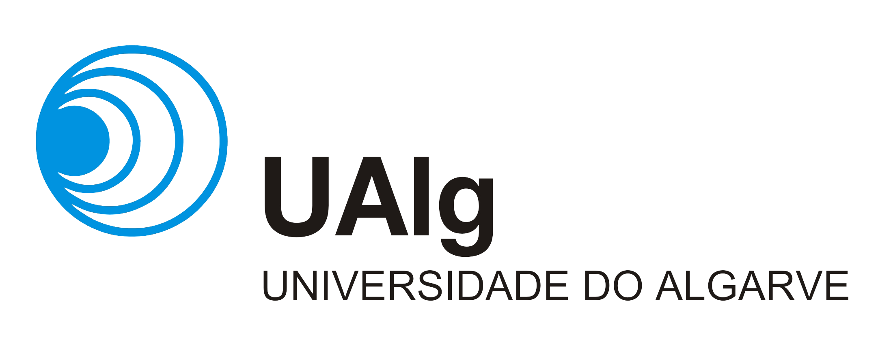
- Alexandre Rodrigues
- Diogo Fonseca
- Afonso Silva
- Simão Melo de Sousa (coach)
-
UAlgoritmo (Lisbon, Portugal)
- Miguel Alvito
- Vasco Evaristo
- Jorge Baptista
- Simão Melo de Sousa (coach)
-
Ualgocorreumal (Lisbon, Portugal)
- Tomás Teodoro
- Diogo Silva
- Tiago Antunes
- Simão Melo de Sousa (coach)
Universidade do Minho
-
CatamorfismUM (Lisbon, Portugal)
- Rui Oliveira
- Luís Pereira
- Tiago Bacelar Pereira
- Rui Mendes (coach)
-
Turbo the snail (Lisbon, Portugal)
- Pedro Mo
- André Pinheiro
- Tiago Costa
- Rui Mendes (coach)
Universidade do Porto
-
Debuggers da Tasca (Lisbon, Portugal)

- Hugo Cardante
- João Mendes
- Pedro Gonçalo Correia
- Pedro Ribeiro (coach)
-
TSP — Tiny Silly Problem (Lisbon, Portugal)
- Patrick Daniel
- Marco Vilas Boas
- Félix Martins
- André Restivo (coach)
-
long long main (Lisbon, Portugal)
- Luís Barbosa
- Luís Gonçalves
- Sofia Sousa
- André Restivo (coach)
Universitat Politècnica de Catalunya
-
UPC-1 (Lisbon, Portugal)

- Alejandro Vivero Puga
- Manuel Torres Cid
- Bernat Pagès
- Salvador Roura (coach)
-
UPC-2 (Lisbon, Portugal)
- Pablo Sáez Reyes
- Sergio Domínguez Alonso
- Javier Badesa Pérez
- Salvador Roura (coach)
-
UPC-3 (Lisbon, Portugal)
- Jan Matas Cantos
- Rafael Torres Arrechea
- Roger Lidón Ardanuy
- Salvador Roura (coach)
Universitat Politècnica de València
-
Linux Gang (Lisbon, Portugal)

- Ruben Nieto Val
- Juan Martínez Alonso
- Leonardo Luque Paganelli
- Jon Ander Gómez (coach)
-
std::pair (Lisbon, Portugal)
- Mubeen Ahmed Kaleem
- Miguel Roldán Muñoz
- Héctor Fréard Ruiz
- Jon Ander Gómez (coach)
Universitat Pompeu Fabra
-
Arroz tres delicias (Lisbon, Portugal)

- Nasar Roca
- Yuma Ishigooka
- Jinsong Liu
- Anders Jonsson (coach)
-
Compañía Letal (Lisbon, Portugal)
- Noel Tuset
- Alex Roig
- Oscar Salueña
- Anders Jonsson (coach)
-
Receptive Raccoons (Lisbon, Portugal)
- Gellert Toth
- William Bailkoski
- Neli Catar
- Anders Jonsson (coach)
University of Bern
-
UniBe (Lyon, France)
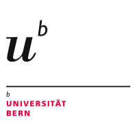
- Jasmin Studer
- Elias Schafer
- Lionel Stürmer
- Viktor Shipitsin (coach)
University of Bologna
-
UniBoiiis (Pisa, Italy)

- Davide Gianessi
- Simone Mazzacano
- Giacomo Boschi
- Antonella Carbonaro (coach)
-
UniBoiis (Pisa, Italy)
- Glauco Masi
- Eric Aquilotti
- Francesco Cerroni
- Antonella Carbonaro (coach)
-
UniBois (Pisa, Italy)
- Stefano Dal Pozzo
- Davide Bartoli
- Elia Soldati
- Antonella Carbonaro (coach)
University of Cagliari
-
QBR - Quei Bravi Ragazzi (Pisa, Italy)
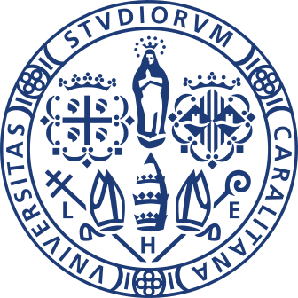
- Mirko Angius
- Davide Sechi
- Nicholas Meli
- Riccardo Scateni (coach)
University of Coimbra
-
Brain Limit Exceeded (Lisbon, Portugal)

- José Moura
- Daniel Nunes
- Tomás Simões
- Gonçalo Lopes (coach)
-
CLions (Lisbon, Portugal)
- Tiago Silva
- Nuno Batista
- Joao Nuno Coelho
- Gonçalo Lopes (coach)
University of Geneva
-
UNIGE 1 (Lyon, France)
- Théo Stephan von Düring
- Thérèse Maria Arousell
- Léo François Marcel Bonaz
- Julia Buwaya (coach)
-
UNIGE 2 (Lyon, France)
- Antoine Maendly
- Agon Kolgeci
- Alexandre Riedo
- Julia Buwaya (coach)
University of Haifa
-
TopOfTheMountain (Lisbon, Portugal)

- Namir Ballan
- Shmuel Oded Brandt
- Yarin Saraga
- Liran Markin (coach)
University of Padova
-
DEInformatics (Pisa, Italy)

- Simone Moretti
- Giovanni Gaio
- Alessandro Dario
- Francesco Silvestri (coach)
-
Fellows Of Galileo (Pisa, Italy)
- Valentino Badalucco
- Daniele De Pietri
- Hussein Shalaby
- Francesco Silvestri (coach)
University of Rennes
-
0x45534952 (Lyon, France)
- Malo Thiebaud
- Florian Cliquet
- Pierre Bertholom
- Zoltan Miklos (coach)
University of Verona
-
Steins;Code (Pisa, Italy)
- Edi De Candido
- Elia Tonoli
- Dimitri Binosi
- Romeo Rizzi (coach)
University of the Basque Country
-
Chebyshev's fraternity (Lisbon, Portugal)
- Eneko Basauri
- Oihan Arrondo
- Beñat Descalzo Alcuaz
- Jon Vadillo (coach)
-
EHUxception Throwers (Lisbon, Portugal)
- Aitor Arzalluz
- Julen Casajus
- Jorge Arévalo
- Jon Vadillo (coach)
Università Commerciale Luigi Bocconi
-
Bocconi Due (Pisa, Italy)
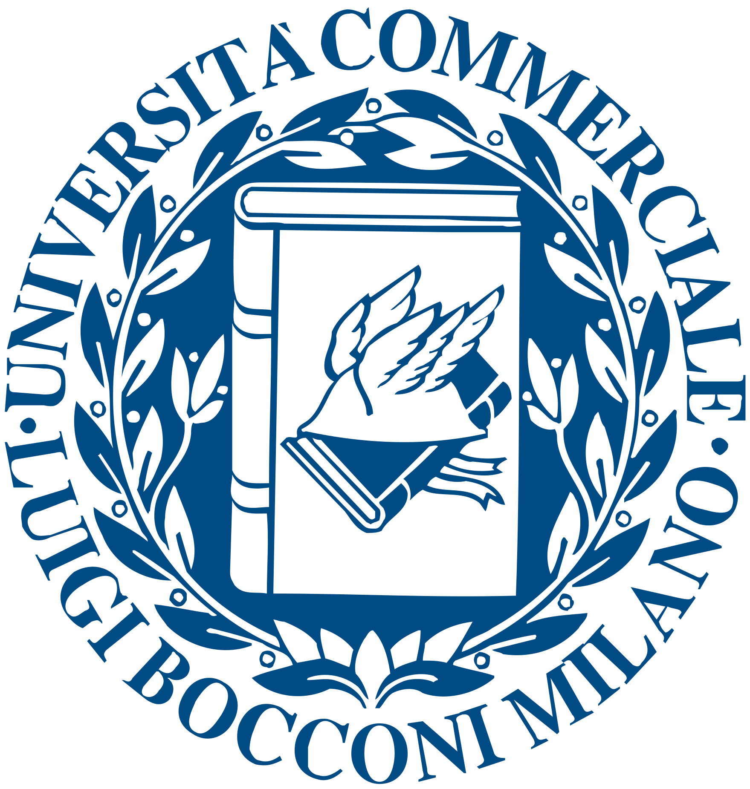
- Demir Elmas
- Giorgio Micaletto
- Omar Jallouq
- Adam Polak (coach)
-
Bocconi Tre (Pisa, Italy)
- Lorenzo Caputi
- Maria Ester Massari
- Andrei-Alexandru Sofronie
- Adam Polak (coach)
-
Bocconi Uno (Pisa, Italy)
- Riccardo Alberghi
- Michelangelo Nardi
- Federico Scaffidi Muta
- Adam Polak (coach)
Università Degli Studi di Milano
-
LaStatale Crimson (Pisa, Italy)

- Maria Cichosz
- Luca Favini
- Noemi Gambirasio
- Walter Cazzola (coach)
-
LaStatale Orange (Pisa, Italy)
- Leonardo Ou Xu
- Matteo Curia
- Matteo Schiavini
- Walter Cazzola (coach)
-
The LaSt(atale) Dance (Pisa, Italy)
- Fabrizio Brioni
- Michael Chelli
- Nicolas Albani
- Walter Cazzola (coach)
Università degli Studi di Genova
-
Genova 1 (Pisa, Italy)

- Gabriele Dellepere
- Salvatore Gulizia
- Gabriele Martini
- Matteo Dell'Amico (coach)
-
Genova 2 (Pisa, Italy)
- Lorenzo Gianì
- Thomas Ghione
- Fabien Dufour
- Matteo Dell'Amico (coach)
Università della Calabria
-
piparilli (Pisa, Italy)
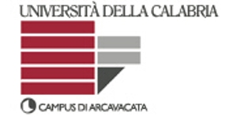
- Domenico Ricci
- Giuseppe Barbieri
- Giorgio Martucci
- Mario Alviano (coach)
Università della Svizzera italiana
-
FlutterPage (Pisa, Italy)

- Lorenzo Spada
- Zhiyao Yan
- Zhixiang Dai
- Laura Pozzi (coach)
-
fUSIlli (Pisa, Italy)
- Lorenzo Guideri
- Marco Biasion
- Alessandro Della Flora
- Laura Pozzi (coach)
Università di Pisa
-
PisaBit (Pisa, Italy)

- Tommaso Nencini
- Andrea Gennari
- Andrea Nanni
- Rossano Venturini (coach)
-
flag[10] (Pisa, Italy)
- Tommaso Dossi
- Valerio Stancanelli
- Filippo Casarin
- Rossano Venturini (coach)
-
teamg (Pisa, Italy)
- Natalija Tosic
- Giulia Aloia
- Sofia Scalzo
- Rossano Venturini (coach)
Università di Roma - La Sapienza
-
SapienzaBlack (Pisa, Italy)

- Andrea Puddu
- Francesco Maria Petrangeli
- Francesco Bianchi
- Annalisa Massini (coach)
-
SapienzaRed (Pisa, Italy)
- Leandro Antonio Pagano
- Daniel Falbo
- Lingfeng Jin
- Annalisa Massini (coach)
-
SapienzaWhite (Pisa, Italy)
- Daniele Quattrociocchi
- Tommaso De Nicola
- Darmen Mellat
- Annalisa Massini (coach)
Università di Trento
-
unitn1 (Pisa, Italy)

- Giovanni Zanibellato
- Ludovico Cappellato
- Luca Dematté
- Alberto Montresor (coach)
-
unitn2 (Pisa, Italy)
- Davide Castellani
- Alessandro Nardin
- Andrea Bissoli
- Alberto Montresor (coach)
Université Gustave Eiffel
-
UGE 1 (Lyon, France)
- Anaëlle FOURRE
- Rémy KIES
- Nathan CHAPELAIN
- Hadrien Barral (coach)
Université Paris Cité
-
HAI 1.3 (Lyon, France)
- Amaury Legrain
- Guilford Dambrine
- Radvilas Rumšas
- Lionel Moisan (coach)
-
Hell World (Lyon, France)
- Thuy Tien Dabas
- Djamel Ait Moussa
- Wenxiang Zhang
- Lionel Moisan (coach)
Université Paris-Saclay
-
UPS shipping solutions (Lyon, France)
- Yuliy Daniel
- Lucas Hermier--Gastineau
- Yaroslav Kudrevych
- Christoph Dürr (coach)
-
UPSummit (Lyon, France)
- Aymane Lotfi
- Kyrylo Hrynevych
- Zein Sakkour
- Christoph Dürr (coach)
Université de Montpellier
-
UMontpellier-A (Lyon, France)

- Alex Dujardin
- Lukas Deronzier
- Elias Paris
- Stéphane Bessy (coach)
-
UMontpellier-B (Lyon, France)
- Denil Bouafia
- Jacques Pham Ba Nien
- Lysandre Terrisse
- Hugo Jacob (coach)
École Nationale Supérieure d'électrotechnique, d'électronique, d'informatique, d'hydraulique et des Télécommunications
-
net7_7uring (Lyon, France)

- Antoine Legoupil
- Alex Bechu
- Mazen Messai
- Victor Barilly (coach)
École Normale Supérieure de Lyon
-
E N S p a c e (Lyon, France)

- Antoine Crosnier
- Benoît HUFTIER
- Alexandre Douard
- - (coach)
-
ENSL2 (Lyon, France)
- Mathieu Longatte
- Florent Ferrari
- Louison MOCQ
- - (coach)
-
ENSL3 (Lyon, France)
- Raphaël Evrard
- Émilie Neyraud
- Amaury Mazoyer
- - (coach)
École Normale Supérieure de Paris
-
ENS Ulm 1 (Lyon, France)

- Justin Cahuzac
- Sven Meyer
- Yann Viegas
- Hadrien Barral (coach)
-
ENS Ulm 2 (Lyon, France)
- Sylvain Gay
- Paul Raphaël
- Aimeric Duchemin
- Hadrien Barral (coach)
-
ENS Ulm 3 (Lyon, France)
- Ngô Quý Đăng
- Doan Dai Nguyen
- Victor Deng
- Hadrien Barral (coach)
École Normale Supérieure de Paris-Saclay
-
Emotionally Not Stable (Lyon, France)

- Maena Quemener
- Mathis Degryse
- Evelyne Le Bezvoët
- Jill-Jênn Vie (coach)
-
Expect No Semblance of Programming Skills (Lyon, France)
- Angel Wuttke
- Jonathan Baumann
- Baptiste Vallée
- Jill-Jênn Vie (coach)
École Normale Supérieure de Rennes
-
ENS Rennes 1 (Lyon, France)
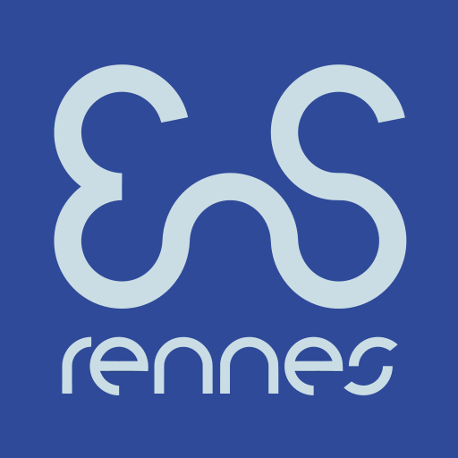
- Nicolas Dassas-Henny
- Nicolas Vincent
- Damien Lejosne
- Yaëlle Vinçont (coach)
-
ENS Rennes 2 (Lyon, France)
- Jean Toulzac
- Piero Terrier
- Arnaud Patey
- Yaëlle Vinçont (coach)
École Pour l'Informatique et les Techniques Avancées
-
EpiSalade (Lyon, France)
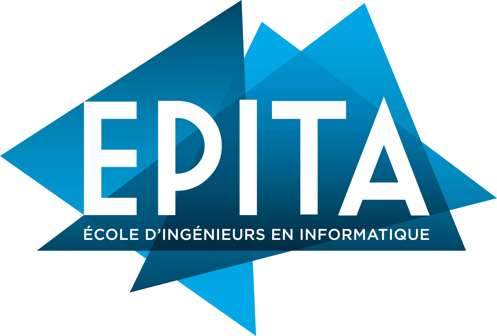
- Quentin Rataud
- Rémy Le Bohec
- Romain Le Mière
- Valentin SEUX (coach)